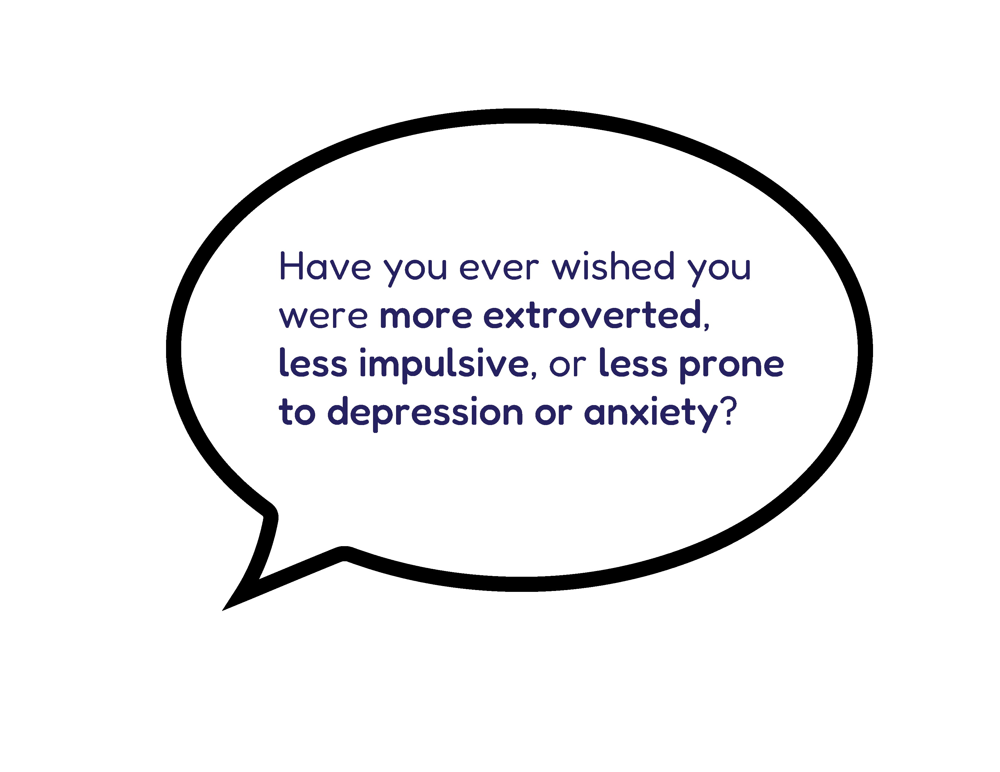
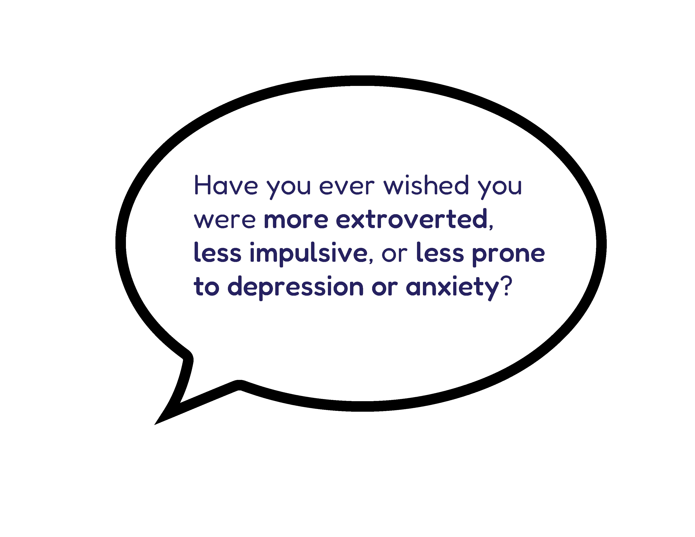
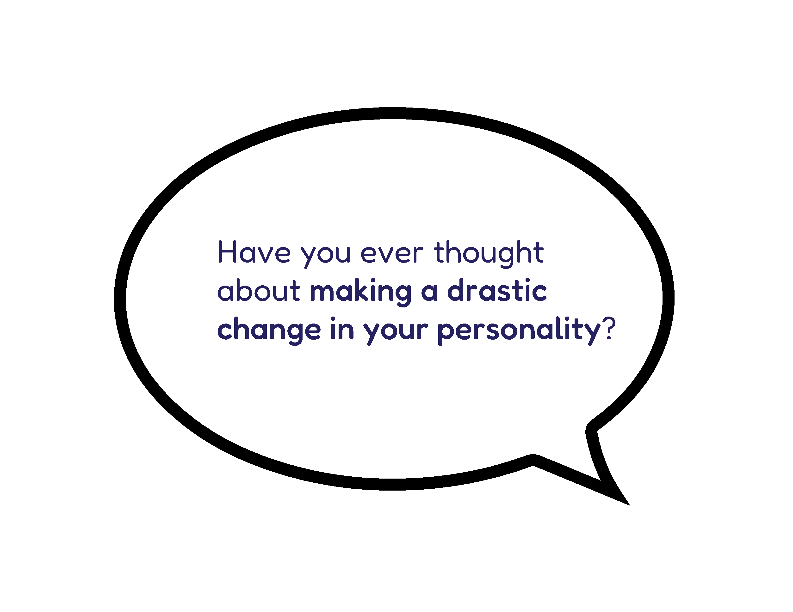
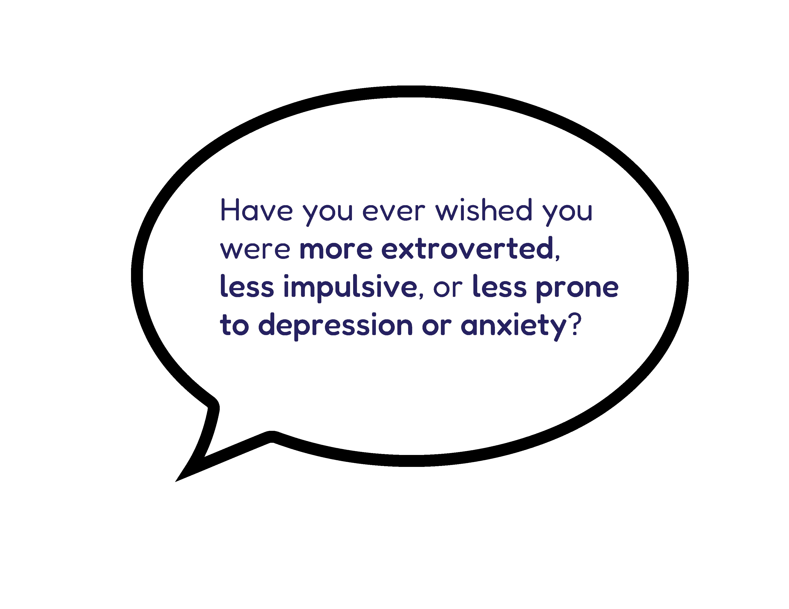
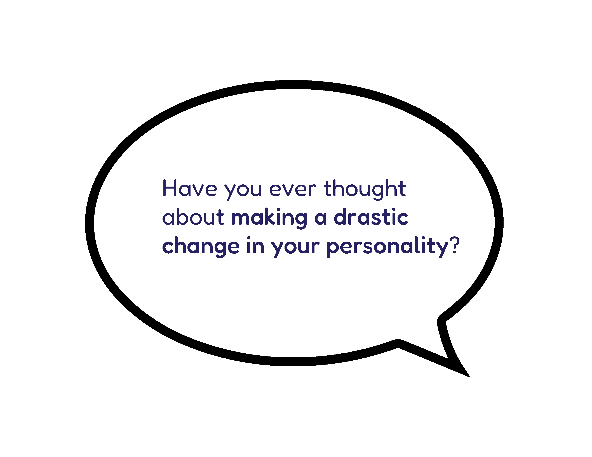

Have you ever thought about making a drastic change in your personality ?
Have you ever wished you were more extroverted , less impulsive or less prone to depression or anxiety ?
About us

Have you ever thought about making a drastic change in your personality ?
Have you ever wished you were more extroverted , less impulsive or less prone to depression or anxiety ?